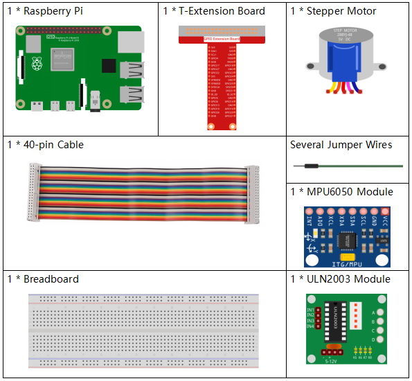
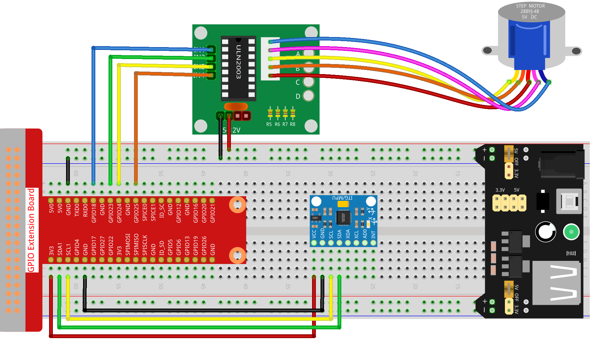

Nota
Ciao, benvenuto nella SunFounder Raspberry Pi & Arduino & ESP32 Enthusiasts Community su Facebook! Approfondisci il tuo utilizzo di Raspberry Pi, Arduino ed ESP32 insieme ad altri appassionati.
Perché unirsi a noi?
Supporto Esperto: Risolvi problematiche post-vendita e sfide tecniche con l’aiuto della nostra comunità e del nostro team.
Impara e Condividi: Scambia consigli e tutorial per migliorare le tue competenze.
Anteprime Esclusive: Accedi in anteprima agli annunci di nuovi prodotti.
Sconti Speciali: Godi di sconti esclusivi sui nostri prodotti più recenti.
Promozioni e Giveaway Festivi: Partecipa a giveaway e promozioni durante le festività.
👉 Pronto a esplorare e creare con noi? Clicca su [Qui] e unisciti oggi!
3.1.6 Controllo di Movimento
Introduzione
In questa lezione, realizzeremo un semplice dispositivo di rilevamento e controllo del movimento. L’MPU6050 viene utilizzato come sensore e il motore passo-passo come dispositivo controllato. Con l’MPU6050 montato su un guanto, è possibile controllare il motore passo-passo ruotando il polso.
Componenti Necessari
In questo progetto, abbiamo bisogno dei seguenti componenti.
{kind=link}
Schema Elettrico
T-Board Name |
physical |
wiringPi |
BCM |
GPIO18 |
Pin 12 |
1 |
18 |
GPIO23 |
Pin 16 |
4 |
23 |
GPIO24 |
Pin 18 |
5 |
24 |
GPIO25 |
Pin 22 |
6 |
25 |
SDA1 |
Pin 3 |
||
SCL1 |
Pin 5 |
Procedure Sperimentali
Passo 1: Costruisci il circuito.
Passo 2: Apri il file del codice.
cd ~/davinci-kit-for-raspberry-pi/python-pi5
Passo 3: Esegui.
sudo python3 3.1.6_MotionControl.py
Una volta avviato il programma, se l’angolo di inclinazione dell” MPU6050 sull” asse Y è maggiore di 45°, il motore passo-passo ruota in senso antiorario; se è inferiore a -45°, il motore ruota in senso orario.
Avvertimento
Se appare l’errore RuntimeError: Cannot determine SOC peripheral base address, fai riferimento a Se gpiozero non funziona.
Codice
Nota
Puoi Modificare/Reimpostare/Copiare/Eseguire/Fermare il codice qui sotto. Prima di eseguire modifiche, assicurati di trovarti nel percorso del codice, ad esempio davinci-kit-for-raspberry-pi/python-pi5. Dopo aver modificato il codice, puoi eseguirlo direttamente per vedere l’effetto.
#!/usr/bin/env python3
from gpiozero import OutputDevice
import smbus
import math
import time
# Inizializzazione dei registri di gestione dell’alimentazione per MPU6050
power_mgmt_1 = 0x6b
power_mgmt_2 = 0x6c
# Configura la comunicazione I2C con MPU6050
bus = smbus.SMBus(1) # Inizializza SMBus
address = 0x68 # Indirizzo I2C di MPU6050
bus.write_byte_data(address, power_mgmt_1, 0) # Attiva MPU6050
# Inizializza i pin motore sui pin GPIO 18, 23, 24, 25
motorPin = [OutputDevice(pin) for pin in (18, 23, 24, 25)]
# Imposta i parametri di velocità di rotazione del motore
rolePerMinute = 15
stepsPerRevolution = 2048
# Calcola il ritardo tra i passi per raggiungere il valore RPM desiderato
stepSpeed = (60 / rolePerMinute) / stepsPerRevolution
# Legge un byte singolo dall'indirizzo I2C specificato
def read_byte(adr):
return bus.read_byte_data(address, adr)
# Legge una parola (2 byte) dall'indirizzo I2C specificato
def read_word(adr):
high = bus.read_byte_data(address, adr)
low = bus.read_byte_data(address, adr + 1)
val = (high << 8) + low
return val
# Legge una parola in complemento a 2
def read_word_2c(adr):
val = read_word(adr)
if val >= 0x8000:
return -((65535 - val) + 1)
else:
return val
# Calcola la distanza euclidea tra due punti
def dist(a, b):
return math.sqrt((a * a) + (b * b))
# Calcola la rotazione sull'asse Y
def get_y_rotation(x, y, z):
radians = math.atan2(x, dist(y, z))
return -math.degrees(radians)
# Calcola la rotazione sull'asse X
def get_x_rotation(x, y, z):
radians = math.atan2(y, dist(x, z))
return math.degrees(radians)
# Ottiene l'angolo di inclinazione da MPU6050
def mpu6050():
accel_xout = read_word_2c(0x3b)
accel_yout = read_word_2c(0x3d)
accel_zout = read_word_2c(0x3f)
accel_xout_scaled = accel_xout / 16384.0
accel_yout_scaled = accel_yout / 16384.0
accel_zout_scaled = accel_zout / 16384.0
angle = get_y_rotation(accel_xout_scaled, accel_yout_scaled, accel_zout_scaled)
return angle
# Controlla la rotazione del motore passo-passo
def rotary(direction):
if direction == 'c':
# Sequenza di rotazione in senso orario
for j in range(4):
for i in range(4):
if 0x99 >> j & (0x08 >> i):
motorPin[i].on()
else:
motorPin[i].off()
time.sleep(stepSpeed)
elif direction == 'a':
# Sequenza di rotazione in senso antiorario
for j in range(4):
for i in range(4):
if 0x99 << j & (0x08 >> i):
motorPin[i].on()
else:
motorPin[i].off()
time.sleep(stepSpeed)
# Ciclo principale per leggere continuamente l'angolo di inclinazione e controllare il motore
try:
while True:
angle = mpu6050()
if angle >= 45:
rotary('a') # Ruota in senso antiorario per inclinazioni positive
elif angle <= -45:
rotary('c') # Ruota in senso orario per inclinazioni negative
except KeyboardInterrupt:
# Spegne tutti i pin del motore su interruzione da tastiera
for pin in motorPin:
pin.off()
Spiegazione del Codice
Lo script inizia importando le librerie necessarie:
gpiozeroper controllare i pin GPIO,smbusper la comunicazione I2C,mathper operazioni matematiche etimeper introdurre ritardi.#!/usr/bin/env python3 from gpiozero import OutputDevice import smbus import math import time
Configura la comunicazione I2C con il sensore MPU6050.
power_mgmt_1epower_mgmt_2sono registri per la gestione dell’alimentazione del sensore, che viene «svegliato» scrivendo supower_mgmt_1.# Inizializza i registri di gestione dell'alimentazione per MPU6050 power_mgmt_1 = 0x6b power_mgmt_2 = 0x6c # Configura la comunicazione I2C con MPU6050 bus = smbus.SMBus(1) # Inizializza SMBus address = 0x68 # Indirizzo I2C di MPU6050 bus.write_byte_data(address, power_mgmt_1, 0) # Sveglia il MPU6050
Inizializza i pin GPIO (18, 23, 24, 25) per il controllo del motore passo-passo. Ogni pin è associato a una bobina del motore.
# Inizializza i pin del motore sui pin GPIO 18, 23, 24, 25 motorPin = [OutputDevice(pin) for pin in (18, 23, 24, 25)]
Imposta i parametri di velocità del motore (giri al minuto) e il numero di passi per rivoluzione.
stepSpeedcalcola il ritardo tra i passi per ottenere la velocità RPM desiderata, garantendo un funzionamento fluido del motore.# Imposta i parametri di velocità di rotazione del motore rolePerMinute = 15 stepsPerRevolution = 2048 # Calcola il ritardo tra i passi per raggiungere l'RPM desiderato stepSpeed = (60 / rolePerMinute) / stepsPerRevolution
Queste funzioni gestiscono la comunicazione I2C.
read_bytelegge un byte singolo da un indirizzo specificato, mentreread_wordlegge due byte (una parola) combinandoli in un unico valore utilizzando operazioni bitwise (<<e+).# Legge un byte singolo dall'indirizzo I2C specificato def read_byte(adr): return bus.read_byte_data(address, adr) # Legge una parola (2 byte) dall'indirizzo I2C specificato def read_word(adr): high = bus.read_byte_data(address, adr) low = bus.read_byte_data(address, adr + 1) val = (high << 8) + low return val
Questa funzione converte la parola letta in formato di complemento a 2, utile per interpretare i valori firmati dei dati del sensore. La conversione è necessaria per gestire le letture negative del sensore.
# Legge una parola in formato complemento a 2 def read_word_2c(adr): val = read_word(adr) if val >= 0x8000: return -((65535 - val) + 1) else: return val
distcalcola la distanza euclidea tra due punti, usata nei calcoli di rotazione.get_y_rotationeget_x_rotationcalcolano gli angoli di rotazione lungo gli assi Y e X, rispettivamente, usando la funzioneatan2della libreriamathe convertendo il risultato in gradi.# Calcola la distanza euclidea tra due punti def dist(a, b): return math.sqrt((a * a) + (b * b)) # Calcola la rotazione sull'asse Y def get_y_rotation(x, y, z): radians = math.atan2(x, dist(y, z)) return -math.degrees(radians) # Calcola la rotazione sull'asse X def get_x_rotation(x, y, z): radians = math.atan2(y, dist(x, z)) return math.degrees(radians)
Questa funzione legge i dati dell’accelerometro dal sensore MPU6050, scala i valori letti e calcola l’angolo di inclinazione usando la funzione
get_y_rotation.read_word_2cviene utilizzata per leggere i dati del sensore in formato complemento a 2, gestendo i valori negativi.# Ottiene l'angolo di inclinazione da MPU6050 def mpu6050(): accel_xout = read_word_2c(0x3b) accel_yout = read_word_2c(0x3d) accel_zout = read_word_2c(0x3f) accel_xout_scaled = accel_xout / 16384.0 accel_yout_scaled = accel_yout / 16384.0 accel_zout_scaled = accel_zout / 16384.0 angle = get_y_rotation(accel_xout_scaled, accel_yout_scaled, accel_zout_scaled) return angle
La funzione
rotarycontrolla la rotazione del motore passo-passo. Esegue una sequenza di passi per la rotazione in senso orario o antiorario in base al parametrodirection. La sequenza accende o spegne i pin del motore in un pattern specifico.# Controlla la rotazione del motore passo-passo def rotary(direction): if direction == 'c': # Sequenza di rotazione in senso orario for j in range(4): for i in range(4): if 0x99 >> j & (0x08 >> i): motorPin[i].on() else: motorPin[i].off() time.sleep(stepSpeed) elif direction == 'a': # Sequenza di rotazione in senso antiorario for j in range(4): for i in range(4): if 0x99 << j & (0x08 >> i): motorPin[i].on() else: motorPin[i].off() time.sleep(stepSpeed)
Il ciclo principale legge continuamente l’angolo di inclinazione dal sensore MPU6050 e controlla la direzione di rotazione del motore in base all’angolo. Se il programma viene interrotto (ad es., con un’interruzione da tastiera), spegne tutti i pin del motore per sicurezza.
# Ciclo principale per leggere continuamente l'angolo di inclinazione e controllare il motore try: while True: angle = mpu6050() if angle >= 45: rotary('a') # Ruota in senso antiorario per inclinazioni positive elif angle <= -45: rotary('c') # Ruota in senso orario per inclinazioni negative except KeyboardInterrupt: # Spegne tutti i pin del motore su interruzione da tastiera for pin in motorPin: pin.off()